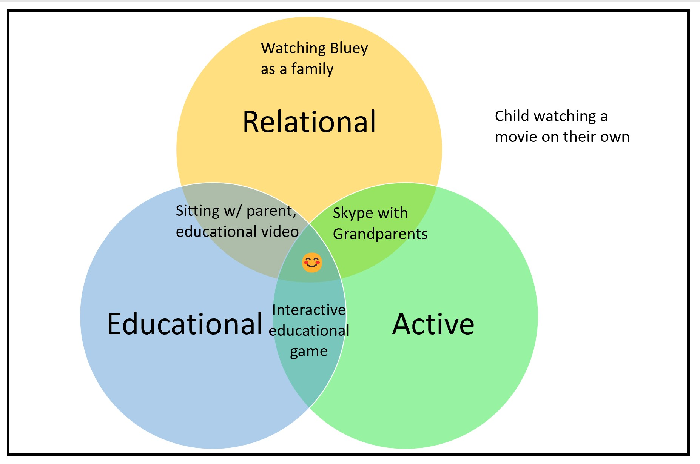

My husband Jeremy and I never intended to homeschool, and yet we have now, unexpectedly, committed to homeschooling long-term. Prior to the pandemic, we both worked full-time in careers that we loved and found meaningful, and we sent our daughter to a full-day Montessori school. Although I struggled with significant health issues, I felt unbelievably lucky and fulfilled in both my family life and my professional life. The pandemic upended my careful balance. Every family is different, with different needs, circumstances, and constraints, and what works for one may not work for others. My intention here is primarily to share the journey of my own (very privileged) family.

Our unplanned introduction to homeschooling
For the first year of the pandemic, most schools in California, where we lived at the time, were closed. Like countless other families, we were unexpectedly thrust into the world of virtual-school and home-school. We ended up participating in an innovative online program that did NOT try to replicate in-person school. A few key differences:
- Each child could work at their own pace, largely through playing educational games and apps that adapted to where they were. There was no particular endpoint that the kids needed to get to at the end of the semester.
- Group video calls were limited in size to no more than 6 kids (and often smaller), so kids got lots of personal interaction with their tutors and each other. Even as an adult, I find video calls larger than 6 people overwhelming.
- Regular movement breaks, where the kids had jumping jack competitions, did Cosmic Kids yoga videos, held dance parties, and ran around the house for scavenger hunts.
- Took advantage of existing materials: the program did not reinvent the wheel, but instead made use of excellent, existing online videos and educational apps.
From August 2020 - March 2021, our daughter was with a small group online, where daily she would spend 1 hour on socio-emotional development (including games, getting to know each other, and discussing feelings), 1 hour on reading, and 1 hour on math. For reading and math, the children each worked at their own pace through engaging games, and could ask the teacher and each other questions whenever they needed help. At the end of these 8 months, our daughter, along with several other kids in her small group, were several years beyond their age levels in both math and reading. It had never been our goal for her to end up accelerated; Jeremy and I were mostly trying to keep her happy and busy for a few hours so we could get some of our own work done. She also had fun and made close friends, who she continues to have video calls and Minecraft virtual playdates with regularly.
Our unconventional views
Although there are plenty of ways to homeschool that don’t involve any screens or technology, Jeremy and I have made use of online tutors, long-distance friendships, educational apps, videos, and web-based games, as key parts of our approach. One thing that helped us going into the pandemic is that we have never treated online/long-distance relationships as inferior to in-person relationships. We both have meaningful friendships that occur primarily, or even entirely, through phone calls, video chats, texts, and online interactions. I have made several big moves since I graduated from high school (moving from Texas to Pennsylvania to North Carolina back to Pennsylvania again and then to California) and I was used to family and close friends being long distance. We live far from our families, and our daughter was already accustomed to chatting with her grandparents on both sides via video calls. My daughter’s best friend is now a child she has never met in person, but has been skyping with almost daily for the last 2 years.
Another thing that made this transition easier is that Jeremy and I have never been anti-screen time. In fact, we don’t consider “screen time” a useful category, since a child passively watching a movie alone is different than skyping with their grandparent is different than playing an educational game interactively with their parent beside them. While we almost never let our daughter do things passively and alone with screens, we enjoy relational and educational screen time. Furthermore, we focus on including other positive life elements (e.g. making sure she is getting enough time outside, being physically active, reading, getting enough sleep, etc) rather than emphasising limits.

A return to in-person school
In 2021, our family immigrated from the USA to my husband’s home country of Australia, and we enrolled our daughter at an in-person school, which she attended from late April - early Dec 2021. Our state had closed borders and almost no cases of covid transmission during this time. By all measures, the school she attended is great: friendly families, kind staff, and a fun performing arts program. While our daughter adjusted quickly to the new environment and made friends, she was quite bored. She lost her previous curiosity and enthusiasm, became more passive, and started to spend a lot of time zoning out. The school tried to accommodate her, letting her join an older grade level for math each day. While the material was initially new, she still found the pace too slow. She started to get very upset at home practising piano or playing chess (activities she previously loved, but where mistakes are inevitable), because she had grown accustomed to getting everything right without trying. At one point, all schools in our region closed during an 8-day snap lockdown. Our daughter was disappointed when the lockdown ended and she had to return to school.
When homeschooling works well (and when it doesn’t)
Over the summer holidays (Dec 2021-Jan 2022), our state pivoted from zero covid to promoting mass infection as “necessary”. We pulled our daughter out of school, initially intending that it would just be a temporary measure until her age group could be fully vaccinated (vaccine rollout was later in Australia than in the USA). However, we immediately saw positive changes, with her regaining her old curiosity, enthusiasm, and proactive nature, all of which she had lost being in school. Her perfectionism disappeared and she began to enjoy challenges again. We supplemented her online classes with in-person playdates, extracurriculars, and sports (due to covid risks, we wear masks and stay outdoors for all of these). We are fortunate to live in a beautiful part of the world, where we can spend most of the year outside. We enjoy visiting the beaches, forests, and parks in our region. Our daughter is happy: playing Minecraft with friends online, learning tennis with other local children, riding bikes as a family, spending hours absorbed in books of her own choosing, enjoying piano and chess again, running around in nature, and learning at her own pace.
Homeschooled kids typically score 15 to 30 percentile points above public-school students on standardised academic achievement tests, and 87% of studies on social development “showed clearly positive outcomes for the homeschooled compared to those in conventional schools”. However, it is understandable that many children had negative experiences with virtual learning in the past 2 years, given that programs were often hastily thrown together with inadequate resources and inappropriately structured to try to mimic in-person school, against the stressful backdrop of a global pandemic. Many parents faced the impossible task of simultaneously needing to work full-time and help their children full-time (and many other parents did not even have the option to stay home). Every family is different, and virtual learning or homeschooling will not suit everyone. There are children who need in-person services only offered within schools; parents whose work constraints don’t allow for it; and kids who thrive being with tons of other kids.
Despite the difficulty of the pandemic, there are a variety of families who found that virtual or homeschooling was better for their particular kids. Some parents have shared about children with ADHD who found in-person school too distracting; children who were facing bullying or violence at school; kids who couldn’t get enough sleep on a traditional school schedule; Black and Latino families whose cultural heritages were not being reflected in curriculums. I enjoyed these article featuring a few such families:
- What if Some Kids Are Better Off at Home? | The New York Times For parents like me, the pandemic has come with a revelation: For our children, school was torture.
- They Rage-Quit the School System—and They’re Not Going Back | WIRED The pandemic created a new, more diverse, more connected crop of homeschoolers. They could help shape what learning looks like for everyone.
Covid Risks
I have had brain surgery twice, was hospitalised in the ICU with a life-threatening brain infection, and have a number of chronic health issues. I am both at higher risk for negative outcomes from covid AND acutely aware of how losing your health can destroy your life. It is lonely and difficult being high-risk in a society that has given up on protecting others. While I am nervous about the long-term impact that homeschooling will have on my career (on top of how my existing health issues already hinder it), acquiring additional disabilities would be far, far worse.
I have been disturbed to follow the ever-accumulating research on cardiovascular, neurological, and immune system harms that can be caused by covid, even in previously healthy people, even in the vaccinated, and even in children. While vaccines significantly reduce risk of death, unfortunately they provide only a limited reduction in Long Covid risk. Immunity wanes, and people face cumulative risks with each new covid infection (so even if you’ve had covid once or twice, it is best to try to avoid reinfections). I am alarmed that leaders are encouraging mass, repeated infections of a generation of children.
Given all this, I am relieved that our decision to continue homeschooling was relatively clear. It much better suits our daughter’s needs AND drastically reduces our family’s covid risk. We can nurture her innate curiosity, protect her intrinsic motivation, and provide in-person social options that are entirely outdoors and safer than being indoors all day at school. Most families are not so fortunate and many face difficult choices, with no good options.
The Broader Picture
I believe that high-quality, equitable, and safe public education is important for a healthy democracy, and I worry about the various ongoing ways in which education is being undermined and attacked. Furthermore, due to a lack of covid protections in communities, high-risk children and children with high-risk families are being shut out of in-person school options in the USA, Australia, and many other places. While the workplaces of politicians and a handful of schools in ultra-wealthy areas installed expensive ventilation upgrades, the majority of schools in the USA and Australia have not had any ventilation upgrades, nor received air purifiers. All children deserve access to an education that is safe, fits their needs, and will allow them to thrive. Even when homeschooling does work, it is often still just an individual solution to systemic problems.